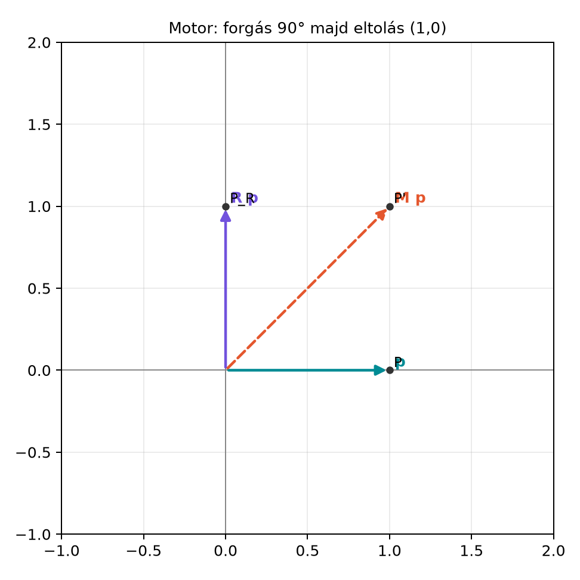

21.4 Euklideszi mozgások: eltolás
és forgatás motorokkal
21.4.1 Motiváció: a forgatás már
megvan, de mitől lesz teljes a merev test mozgása?
A rotorokkal origón átmenő tengely körüli forgatást tudunk leírni:
.
Egy asztalon elcsúsztatott, közben elforgatott robotkarnál vagy egy
csavar becsavarásakor azonban a tárgy általában nem marad az
origóban: el is tolódik. A közönséges vektoros leírásban
ilyenkor egy mátrixszorzás és egy vektor-hozzáadás külön művelet. A
konform geometriai algebra (CGA) egyik legszebb eredménye, hogy az
eltolást is fel tudjuk írni szendvicsszorzattal, így a forgatás és az
eltolás egyetlen algebrai objektumban, a motorban
egyesíthető. Ezzel pontok, egyenesek és körök ugyanazzal a képlettel
mozgathatók.
21.4.2 Szemléletes kép: egyetlen
művelet forgat és tol
A következő ábrán egy pont először az origó körül
-kal
elfordul, majd az
-irányba
egységgel eltolódik. A két lépést egyetlen motorba tudjuk
összevonni.

Motor: forgás 90° majd eltolás (1,0) - A
pattanásvonalas piros pont az eredeti hely: (1,0); a kék (0,1) a forgás
utáni; a zöld (1,1) a forgás+eltolás utáni.
A három pont:
,
,
.
A motor hatásához nem kell külön hozzáadnunk az eltolásvektort; a
szendvicsszorzat
mindent elvégez.
21.4.3 A transzlátor definíciója és
hatása pontra
A Konform geometriai algebra: az alapötlet
alfejezetben bevezettük a konform modell két extra nullvektorát:
az origó,
a végtelen irány. A könyv konvenciójában
Egy euklideszi
pont beágyazása:
Definíció (transzlátor). A
euklideszi vektorhoz tartozó transzlátort (translator)
így jelöljük:
A
geometriai szorzat: mivel a beágyazott euklideszi vektorok merőlegesek
mind
-ra,
mind
-re,
itt
,
tehát
.
Az előjel a könyv
konvenciójából adódik; más forrásokban
is előfordulhat.
A transzlátor inverze a reverziója:
,
és
.
Ez onnan látható be, hogy
,
mert
nullvektor.
Tétel (transzlátor hatása pontra). A
ponthoz tartozó
beágyazott pontot a
vektorú eltolás transzlátora a
pont beágyazásába viszi:
Bizonyítás. Jelöljük
-t.
A pontot három tag összegére bontjuk:
.
Először megmutatjuk, hogyan transzformálódik egyenként az
,
a
és az
tag.
Az
tag transzformáltja.
Írjuk fel a szorzatot:
Kifejtve:
A középső két tagban használjuk, hogy
és
.
Ebből
A fél szorzóval összeadva a két tag:
Az utolsó, kvadratikus tagról hasonló számolással kapjuk, hogy
Így
A
tag transzformáltja.
Ugyanígy kifejtve:
A kvadratikus tag nulla, mert
.
A lineáris tagokra:
A bivektoros tagok kiejtik egymást. Ezért
Az
tag transzformáltja.
Mivel
nullvektor és
,
Az eltolás tehát a végtelen irányt nem változtatja.
A három eredményt összerakva:
Átrendezve:
A zárójelben éppen
áll, tehát
Ezzel a tételt bebizonyítottuk.
21.4.4 Kidolgozott példa: előbb
forgatunk, utána tolunk
Legyen a kiinduló pont
,
tehát
.
Forgassuk el az
síkban
-kal,
majd toljuk el
-gyel.
A
-os
forgatás rotorja:
A transzlátor:
A motor:
Alkalmazzuk a pontra:
Először a rotor hat:
.
Ezért a forgatás után a pont
.
Az eltolás ezután hozzáadja
-et:
A motor tehát a pontot a
koordinátájú pontba viszi, ahogy az ábra is mutatja.
21.4.5 Motorok és általános
euklideszi mozgások
Definíció (motor). Forgatás és eltolás együttesét
motornak (motor) nevezzük. Ha az eltolás transzlátora
,
a forgatás rotorja
,
akkor az „előbb forgat, utána tol” sorrendű motor:
A motor hatása bármely elemre:
A felírásból látszik a sorrend: a szendvicsszorzat kifejtésekor
először
hat, mert
.
Ha előbb eltolunk, és utána forgatunk az origó körül, akkor a motor
alakú. A két sorrend általában nem ugyanazt a mozgást adja, mert a
geometriai szorzat nem kommutatív.
A motorok összefűzése is egyszerű: előbb
,
majd
esetén
Egy robotkarnál az ízületek mozgásai így egyetlen motorrá szorozhatók
össze; a végpont pozíciója és orientációja egyszerre adódik.
21.4.6 Nem origón átmenő tengely
körüli forgatás
A rotor önmagában origón átmenő forgástengelyt feltételez. Ha a
forgástengely a
ponton megy át, akkor a klasszikus gondolat: először eltoljuk a
pontot az origóba, ott forgatunk, majd visszatolunk. A Eltolás
transzlátora alapján a
pontot az origóba a
transzlátor viszi, a visszatolást pedig
végzi. Mivel
,
a teljes motor:
Ez a kifejezés tehát nem egyszerűen
,
hanem a középső
-et
a
transzlátor konjugálja. A szendvicsszabály ezzel a motorral is pontosan
a kívánt mozgást adja.
21.4.7 Csavarmozgás
szemléletesen
Ha az eltolásvektor párhuzamos a forgástengellyel, akkor a motor
csavarmozgást (screw motion) ír le: a test egy tengely
mentén halad előre, miközben a tengely körül forog. Ez a mozgás a csavar
becsavarásának képe. Az általános motor is mindig felbontható egy
csavarmozgásra: a rotor tengelye és az eltolás komponense együttesen
meghatároz egy térbeli egyenest, amely mentén a test csavarodik. Ezt a
tulajdonságot fejlett robotikában és mechanikában is használják; itt
elég annyit megjegyezni, hogy a motor algebrailag ugyanazt a két adatot
hordozza: a forgatási síkot és az eltolásvektort.
21.4.8 Python-ellenőrzés a konform
modellben
A könyv mini könyvtárában a konform modell bitmaszkos általános
algebrai részét a VII. részben építjük fel, ezért itt csak pszeudokód
szintjén mutatjuk az ellenőrzés logikáját. A CGA-ban egy 2D-pontot
például az e0, e1, e2,
einf báziselemekkel írunk le; a motor
alakú.
# Pszeudokód: konform 2D pont és motor ellenőrzése# Algebra([+1, +1, +1, -1]) a CGA 4D szignatúrája,# e0 és einf nullvektorok: e0^2 = 0, einf^2 = 0, e0·einf = -1.P = e0 + e1 +0.5*einf # (1,0) pontR = (1- e12)/sqrt(2) # 90°-os forgásT =1-0.5*e1*einf # eltolás (1,0)-valM = T * RP_m = M * P * M.reverse()# Várt eredmény: e0 + e1 + e2 + einfprint(P_m)
Az eltolást vektorra nem úgy alkalmazzuk, mint a
rotorokat.
A rotoroknál
magára az euklideszi vektorra vonatkozik; az eltolásnál viszont az
euklideszi
vektort nem cseréljük le
-re
a szendvicsben, hanem a beágyazott pontot
alakítjuk át. Az irányvektorok transzformációja CGA-ban nem egyszerű
eltolás, hanem
.
A motorban a szorzási sorrend nem mindegy.
előbb forgat, utána tol;
előbb tol, utána forgat. A két művelet általában nem ugyanaz, mert a
forgatás origója is elmozdul az eltolás után. A robotkarnál ezért mindig
tudni kell, melyik ízület helyi koordinátarendszerét
használjuk.
A transzlátor előjelét a forrás konvenciója határozza
meg.
Ha egy másik forrás
alakot használ, ott általában
konvenció szerepel. A szendvicsszabály akkor is
,
de a konkrét képletek előjelei változhatnak. Külső könyvtár használata
előtt ellenőrizni kell a metrika definícióját.
21.4.10 Feladatok
21.4.10.1 (a) Fogalmi kérdés
Miért nem alkalmazhatjuk az eltolást az euklideszi
vektorra egyszerűen
alakban? Mit ad helyette a konform modell?
21.4.10.2 (b) Kézi számolás
Legyen
.
Számítsd ki
értékét a bizonyításban látott azonosságokkal, és mutasd meg, hogy az
eredmény a
pont beágyazása.
21.4.10.3 (c) Levezetés
Bizonyítsd be, hogy
,
tehát az eltolás a végtelen irányt változatlanul hagyja.
21.4.10.4 (d) Alkalmazás: robotkar
egyszerű motorja
Egy robotkar első ízülete az origóban van. A kar végpontja kezdetben
.
A kar először elfordul
-kal
az
síkban, majd az egész kar eltolódik
-gyel.
Írd fel a motort, és határozd meg a végpont beágyazott pontját a mozgás
után.
21.4.11 Megoldások
21.4.11.1 (a)
A rotorok lineáris, origót fixen hagyó transzformációk; az eltolás
viszont az origót is elmozdítja, ezért nem írható fel az euklideszi
vektorokon lineáris szendvicsszorzattal. A konform modellben az eltolás
a beágyazott ponton hat, és a
irányvektorhoz a
szabály érvényes, nem egyszerűen
.
21.4.11.2 (b)
A
transzlátor:
A bizonyítási azonosságból:
Itt
,
,
tehát
A
pont beágyazása:
A két kifejezés megegyezik.
21.4.11.3 (c)
Legyen
,
.
Mivel
nullvektor és
,
ezért
Ezt jobbról szorozva
-vel:
De
,
tehát az eredmény
.
21.4.11.4 (d)
A forgatás rotorja
.
A transzlátor:
A motor:
A kezdeti pont:
A rotor
-kal
forgat:
,
.
Így a forgatott vektor
.
Az eltolás hozzáad
-et:
A végpont beágyazása:
A motor alkalmazása tehát a
koordinátájú pontot adja.
21.4.12 Rövid összefoglaló
A konform geometriai algebrában az eltolás is szendvicsszorzat: a
vektorhoz tartozó transzlátor
,
és
.
A rotorral kombinálva kapjuk a motort:
,
hatása
,
és ugyanez a képlet alkalmazható pontra, egyenesre és körre is. A
motorok kompozíciója szorzás: előbb
,
majd
esetén
.
Nem origón átmenő tengely körüli forgatás motorja
.
A csavarmozgás az a speciális eset, amikor az eltolás párhuzamos a
forgástengellyel. Továbbvitt eredmény. A motorok
alakját és az
szendvicsszabályt használjuk a Záróprojekt I: saját
geometriai algebra könyvtár tesztekkel és a Záróprojekt II: merev test forgásának szimulációja
rotorokkal alfejezetekben.
21.4.13 Források és ellenőrzési
hiányok
A fejezet a konform geometriai algebra klasszikus eredményeit
foglalja össze, elsősorban a Konform geometriai
algebra: az alapötlet alfejezetben bevezetett konvenciókra építve. A
transzlátor előjele forrásonként változhat; a könyv a
metrikát használja, ezért
.
Külső könyvtárak (például clifford, kingdon)
alkalmazása előtt ellenőrizni kell, hogy az adott dokumentáció milyen
és
definíciót használ.